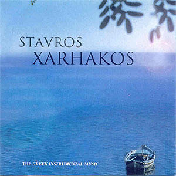
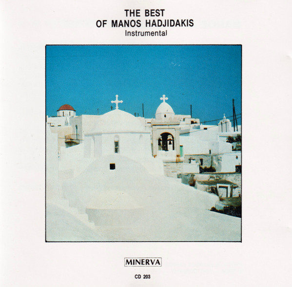
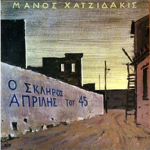
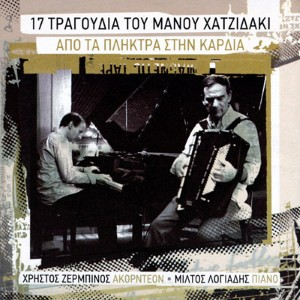
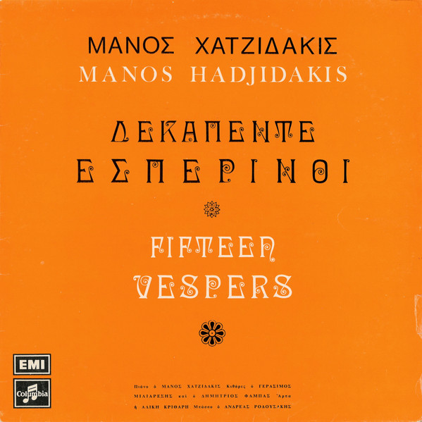
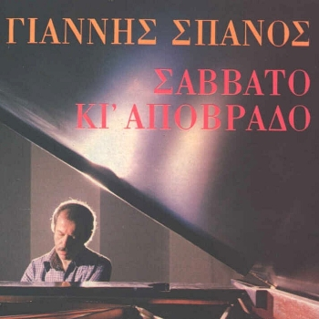
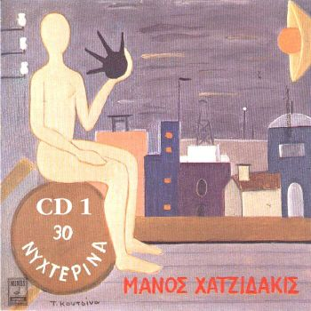
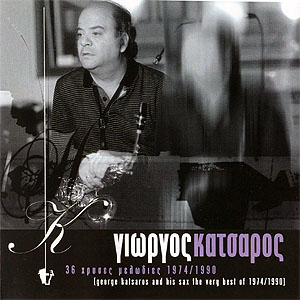

Εδώ παραθέτω προσεγμένες ορχηστρικές διασκευές ποιοτικών ελληνικών τραγουδιών.
Σας προτρέπω να τα ακούσετε προσεκτικά, κι αν χρειαστεί επανειλημμένα, μέχρι να
νιώσετε άνετα με την ακρόαση τους. Αυτό εξυπηρετεί τα ακόλουθα:
Να εξοικειωθείτε με την έλλειψη στίχων και τραγουδιστών.
Να εστιάσετε στις λεπτομέρειες της ενορχήστρωσης, και την κατανομή των μελωδιών
και αρμονίας στα διάφορα όργανα της ορχήστρας.
Αυτό αποτελεί την πρώτη φάση της μετάβασης από την ελληνική στην κλασική μουσική.
Αν είναι δυνατόν, για την ακρόαση σας προτιμήσετε στερεοφωνικά ηχεία ή,
ακόμα καλύτερα, ακουστικά.
Διασκευές για λαϊκή ορχήστρα
Πρώτα παραθέτω διασκευές για λαϊκή ορχήστρα. Δηλαδή, για ορχήστρα
που τυπικά χρησιμοποιείται στην δισκογράφηση των πρωτοτύπων.

Ορχηστρικός Σταύρος Ξαρχάκος
Ορχηστρικές διασκευές 16 γνωστών τραγουδιών του Σταύρου Ξαρχάκου για λαϊκή ορχήστρα.
Διάλεξα εδώ 8 από τα κομμάτια του δίσκου. Μπορείτε επίσης να ακούσετε όλο τον δίσκο
στο youtube.
Ήτανε μια φορά
Γεια σου χαρά σου Βενετιά
Μάτια βουρκωμένα
Το δίχτυ
Υπομονή
Άπονη ζωή
Σαββατόβραδο στην Καισαριανή
Αυτόν τον κόσμο τον καλό

Ορχηστρικός Μάνος Χατζιδάκις
Ορχηστρικές διασκευές 20 γνωστών τραγουδιών του Μάνου Χατζιδάκι για λαϊκή ορχήστρα.
Διάλεξα εδώ 9 από τα κομμάτια του δίσκου:
Μην τον ρωτάς τον ουρανό
Εφτά τραγούδια θα σου πω
Φέρτε μου ένα μαντολίνο
Είμαι αετός χωρίς φτερά
Έλα πάρε μου τη λύπη
Πάμε μια βόλτα στο φεγγάρι
Στην πύλη του Αδριανού
Ο μύθος
Βαλς των χαμένων ονείρων

Ο Σκληρός Απρίλης του 45
Ορχηστρικές διασκευές από τον Μάνο Χατζιδάκι γνωστών ρεμπέτικων για λαϊκή ορχήστρα.
Τέλεια ενορχήστρωση, και φανταστική ερμηνεία της ορχήστρας, και καθαρότητα της ηχογράφησης.
Διάλεξα εδώ 6 από τα κομμάτια του δίσκου.
Οι ορχήστρες δωματίου παρέχουν ευκαιρίες για ευφάνταστες και πρωτότυπες διασκευές,
ανάλογα με τον αριθμό, ποικιλία, και ηχητικό χρώμα των οργάνων που την αποτελούν.
Διάλεξα εδώ κορυφαίες διασκευές, για ορχήστρες αποτελούμενες από όλο και περισσότερα
και ποικίλα όργανα. Οι ενορχηστρώσεις γίνονται όλο και πιό περίτεχνες, και οι μελωδίες
μοιράζονται μεταξύ των οργάνων, που παίζονται παράλληλα και υπερκαλύπτονται.

Από τα πλήκτρα στην καρδιά
17 τραγούδια του Μάνου Χατζιδάκι, υπέροχα διασκευασμένα
για πιάνο (Μίλτος Λογιάδης) και ακορντεόν (Χρήστος Ζερμπίνος).
Ιδιαίτερα ευαίσθητες ερμηνείες και από τους δύο σολίστες.
Διάλεξα εδώ 7 από τα κομμάτια του δίσκου:
Κάπου υπάρχει η αγάπη μου
Η μπαλάντα του Ούρι
Ήρθε βοριάς ήρθε νοτιάς
Με την Ελλάδα καραβοκύρη
Τώρα που πας στην ξενητιά
Πάει έφυγε το τραίνο
Πορνογραφία

15 Εσπερινοί
15 τραγούδια του Μάνου Χατζιδάκι, σε ορχηστρικές διασκευές από τον ίδιο,
για πιάνο, δύο κιθάρες, άρπα, και κοντραμπάσο.
Εξαιρετική ενορχήστρωση, ηχογράφηση, και ποιότητα εκτέλεσης από τους μουσικούς,
με τον Χατζιδάκι στο πιάνο.
Διάλεξα εδώ 7 από τα κομμάτια του δίσκου:
Ο ταχυδρόμος πέθανε
Ο Υμηττός
Ο κυρ Αντώνης
Το τριαντάφυλλο
Κάθε κήπος (Οδός ονείρων)
Το πάρτυ
Η πέτρα

Σάββατο κι απόβραδο
14 τραγούδια του Γιάννη Σπανού, σε ορχηστρικές διασκευές για πιάνο, κιθάρα, βιολοντσέλο,
μπάσσο, ακορντεόν, και harmonica, με τον Γιάννη Σπανό στο πιάνο.
Διάλεξα εδώ 7 από τα κομμάτια του δίσκου:
Τι σου ΄φτεξαν τα νιάτα μου
Γύριζαν τα τραίνα
Θα με θυμηθείς
Οδός Αριστοτέλους
Επεισόδιο
Σε ψάχνω
Με τη ντάμα με το ρήγα

30 Νυχτερινά
30 τραγούδια του Μάνου Χατζιδάκι, σε ορχηστρικές διασκευές στην δεκαετία του 80,
για ορχήστρα δωματίου, που περιέχει πιάνο, κιθάρα, accordion, clarinet, contrabass,
cornet, flute, oboe, και trumpet.
Εξαιρετική ενορχήστρωση του Τάσου Καρακατσάνη, ηχογράφηση, και ποιότητα εκτέλεσης
από τους μουσικούς, με τον Χατζιδάκι στο πιάνο.
Διάλεξα εδώ 13 από τα κομμάτια του δίσκου:
Τριαντάφυλλο στο στήθος
Το κυπαρισσάκι
Χάρτινο το φεγγαράκι
Η ευγενική κυρία (Περιμπανού)
Πόλη μαγική
Χασάπικο 40
Η μελαγχολία της ευτυχίας
Αθανασία
Τα παιδιά κάτω στον κάμπο
Αργό νυχτερινό ζεϊμπέκικο
Ο Κεμάλ
Το μεθυσμένο κορίτσι
Η τρελή του φεγγαριού

Γιώργος Κατσαρός 36 Χρυσές Μελωδίες 1974/1990
Ένα διπλό CD με 36 τραγούδια, 18 ελληνικά και 18 ξένα,
σε ευαίσθητη διασκευή για ορχήστρα από τον συνθέτη και
βιρτουόζο σαξοφωνίστα Γιώργο Κατσαρό. Υποδειγματική επίδειξη
πειστικής μίμησης της ανθρώπινης φωνής από πνευστά όργανα,
ειδικά εδώ το σαξόφωνο. Τα αποδίδει η ορχήστρα
του Κατσαρού, με τον ίδιο στο σαξόφωνο.
Διάλεξα εδώ 8 από τα ελληνικά κομμάτια του δίσκου.